الألف
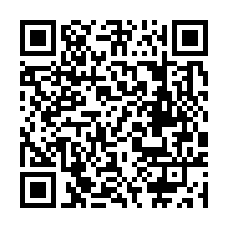
https://bilalslimani166-dotcom.github.io/rahlet-alhorouf/?letter=%D8%A7الباء
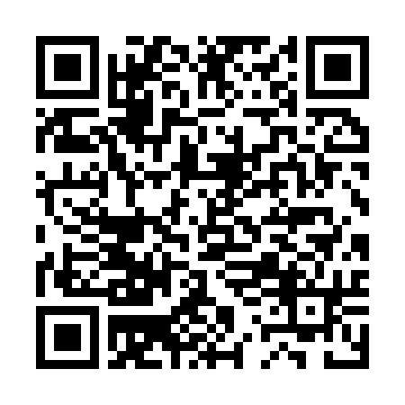
https://bilalslimani166-dotcom.github.io/rahlet-alhorouf/?letter=%D8%A8التاء
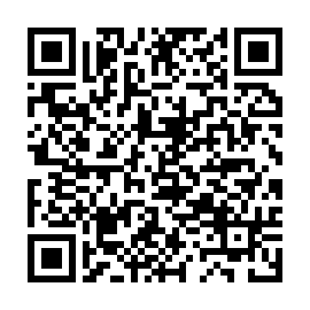
https://bilalslimani166-dotcom.github.io/rahlet-alhorouf/?letter=%D8%AAالثاء
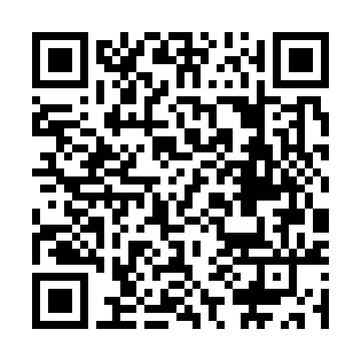
https://bilalslimani166-dotcom.github.io/rahlet-alhorouf/?letter=%D8%ABالجيم
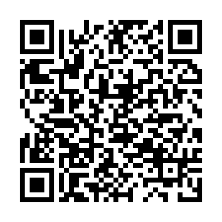
https://bilalslimani166-dotcom.github.io/rahlet-alhorouf/?letter=%D8%ACالحاء
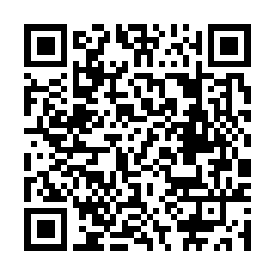
https://bilalslimani166-dotcom.github.io/rahlet-alhorouf/?letter=%D8%ADالخاء
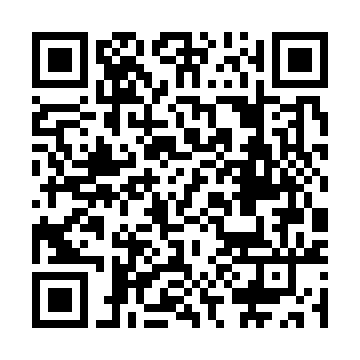
https://bilalslimani166-dotcom.github.io/rahlet-alhorouf/?letter=%D8%AEالدال
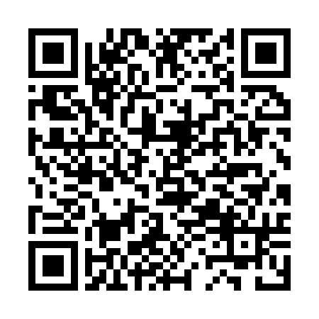
https://bilalslimani166-dotcom.github.io/rahlet-alhorouf/?letter=%D8%AFالذال
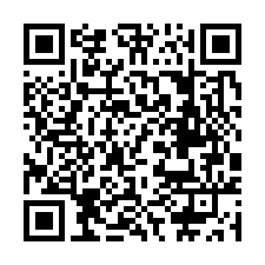
https://bilalslimani166-dotcom.github.io/rahlet-alhorouf/?letter=%D8%B0الراء
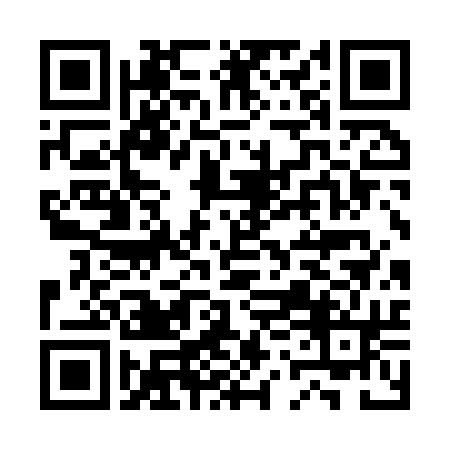
https://bilalslimani166-dotcom.github.io/rahlet-alhorouf/?letter=%D8%B1الزاي
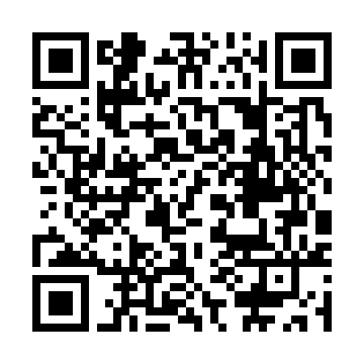
https://bilalslimani166-dotcom.github.io/rahlet-alhorouf/?letter=%D8%B2السين
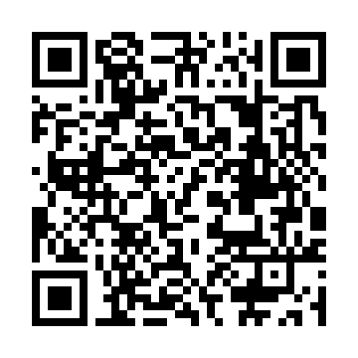
https://bilalslimani166-dotcom.github.io/rahlet-alhorouf/?letter=%D8%B3الشين
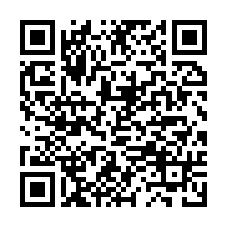
https://bilalslimani166-dotcom.github.io/rahlet-alhorouf/?letter=%D8%B4الصاد
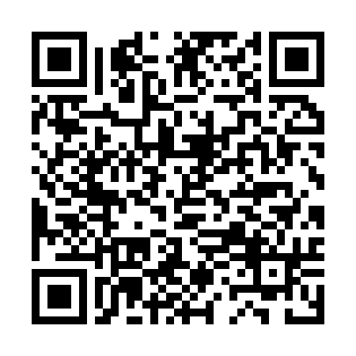
https://bilalslimani166-dotcom.github.io/rahlet-alhorouf/?letter=%D8%B5الضاد
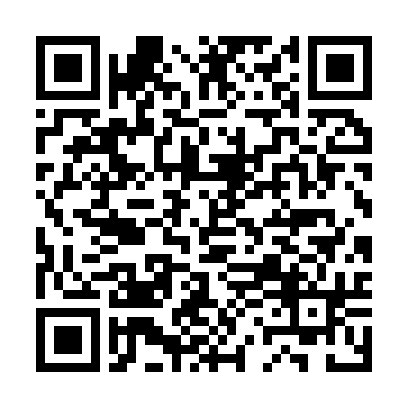
https://bilalslimani166-dotcom.github.io/rahlet-alhorouf/?letter=%D8%B6الطاء
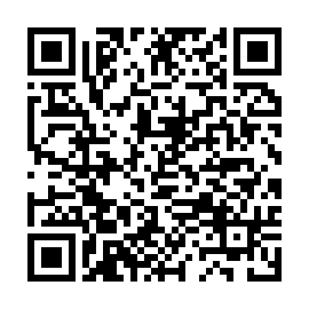
https://bilalslimani166-dotcom.github.io/rahlet-alhorouf/?letter=%D8%B7الظاء
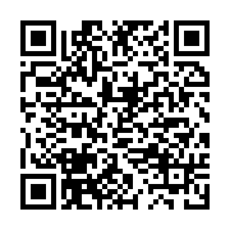
https://bilalslimani166-dotcom.github.io/rahlet-alhorouf/?letter=%D8%B8العين
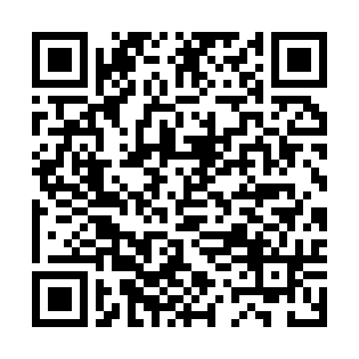
https://bilalslimani166-dotcom.github.io/rahlet-alhorouf/?letter=%D8%B9الغين
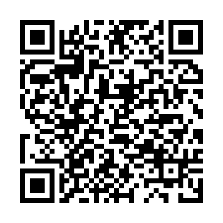
https://bilalslimani166-dotcom.github.io/rahlet-alhorouf/?letter=%D8%BAالفاء
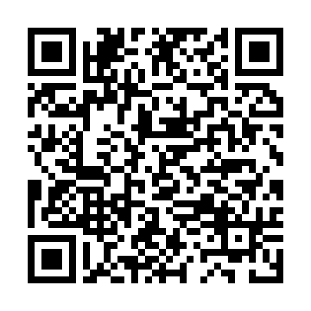
https://bilalslimani166-dotcom.github.io/rahlet-alhorouf/?letter=%D9%81القاف
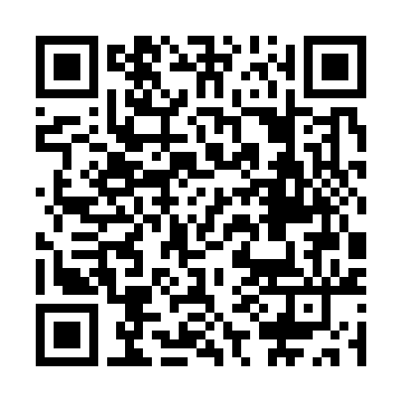
https://bilalslimani166-dotcom.github.io/rahlet-alhorouf/?letter=%D9%82الكاف
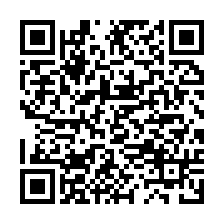
https://bilalslimani166-dotcom.github.io/rahlet-alhorouf/?letter=%D9%83اللام
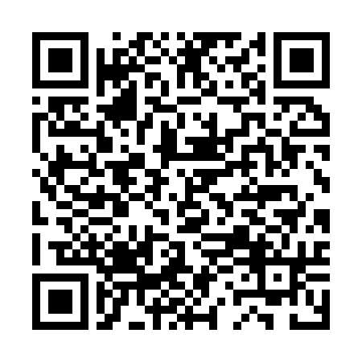
https://bilalslimani166-dotcom.github.io/rahlet-alhorouf/?letter=%D9%84الميم
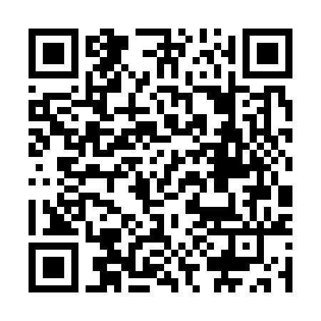
https://bilalslimani166-dotcom.github.io/rahlet-alhorouf/?letter=%D9%85النون
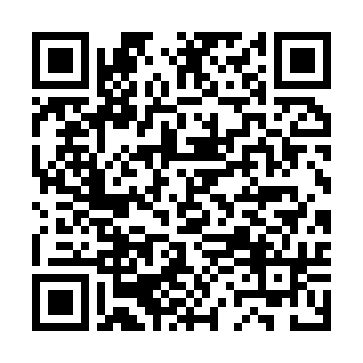
https://bilalslimani166-dotcom.github.io/rahlet-alhorouf/?letter=%D9%86الهاء
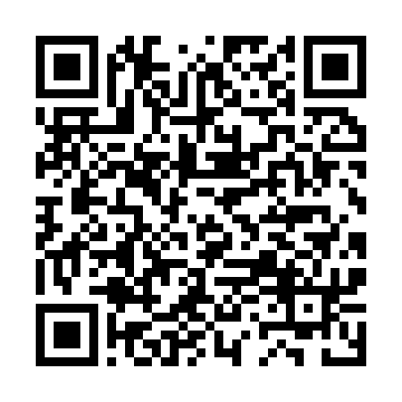
https://bilalslimani166-dotcom.github.io/rahlet-alhorouf/?letter=%D9%87%D9%80الواو
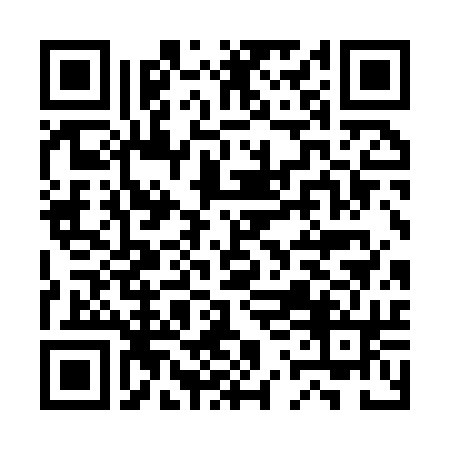
https://bilalslimani166-dotcom.github.io/rahlet-alhorouf/?letter=%D9%88الياء
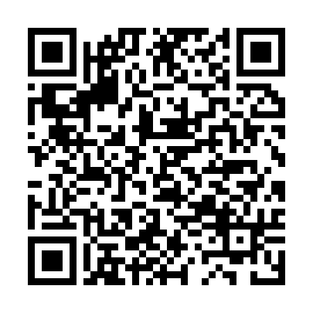
https://bilalslimani166-dotcom.github.io/rahlet-alhorouf/?letter=%D9%8A